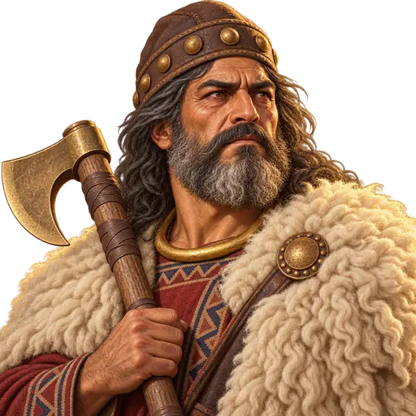
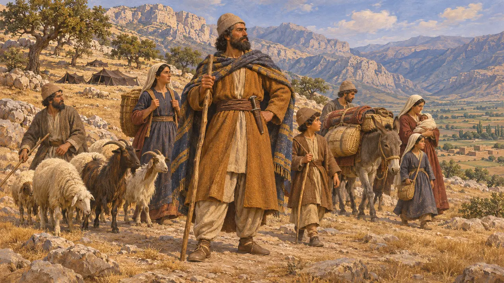
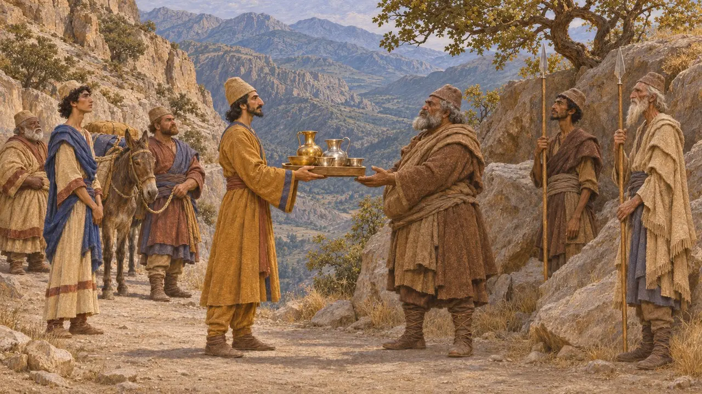
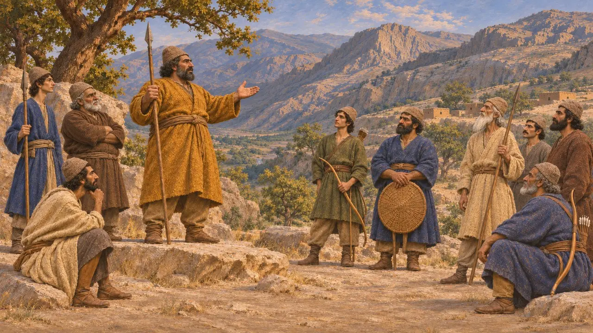
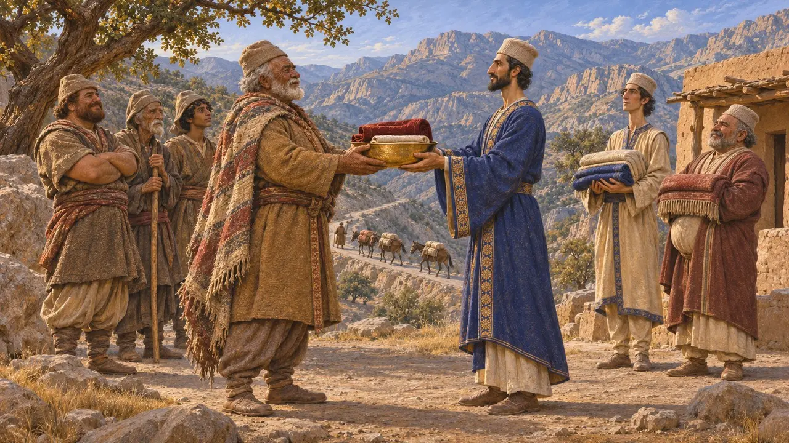
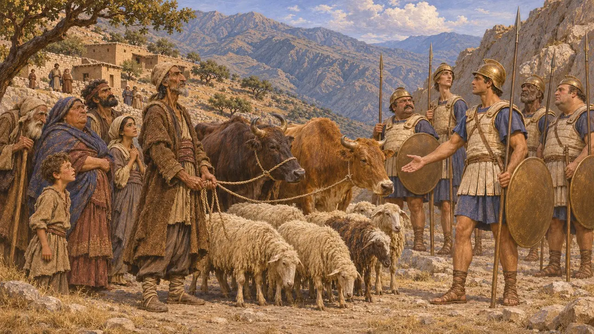

Enciclopedia › Soldados y naves

Gran jefe de las colinas
Caudillo imaginario de los pueblos de las colinas de los Zagros y la Pérside, hacia 530-479 a. e. c.
El Gran Caudillo de las colinas representa a los hombres que dirigían a los pueblos montañeses de la Pérside y los Zagros, como los mardos, los uxios y los coseos, cuando se reunían en gran número. Ninguna fuente de la época nombra a tal caudillo. Autores griegos posteriores conocían a estos pueblos como saqueadores que dominaban los pasos de montaña, y su trato con los reyes persas sugiere que el corazón del imperio aún albergaba comunidades con cierto grado de independencia.
En el juego: El juego lo presenta como un caudillo cuya reserva hace que los saqueadores a 10 casillas o menos golpeen un 20% más fuerte, y cuya caída quiebra a la hueste cuando queda a la mitad de sus efectivos. Es una invención del juego: ninguna fuente antigua describe a un único gran jefe de las colinas.

Tribus de las colinas entre los persas
Relato antiguoHeródoto enumera las tribus que formaban el pueblo persa. Tres, encabezadas por los pasargadas, estaban por encima de las demás; otras cultivaban la tierra; y a otras, entre ellas los mardos y los sagartios, las llama nómadas. La lista sugiere que los grupos pastoriles de las tierras altas de la Pérside se contaban como persas, aunque vivían de forma distinta a la corte y a las aldeas agrícolas de los valles.
Herodotus 1.125

Pueblos que cobraban un precio por el paso
Relato antiguoEstrabón, basándose en Nearco, el almirante de Alejandro, menciona cuatro pueblos depredadores de las montañas: los mardos, los uxios, los elimeos y los coseos. Afirma que los coseos recibían regalos de los reyes persas cuando la corte viajaba entre Ecbatana y Babilonia. Arriano cuenta cómo los uxios de las montañas exigieron a Alejandro en el 331 el pago que, según ellos, los reyes persas siempre les habían dado a cambio del paso.
Strabo 11.13.6; Arrian, Anabasis 3.17

Jefes sin nombre
En disputaLos relatos griegos hablan de estos pueblos como colectivos y rara vez nombran a sus jefes, y no se conserva nada de los años 530-479 a. e. c. sobre cómo elegían a quienes los guiaban en la guerra. La mayoría de los historiadores cree que el liderazgo era local, por clan o por valle, pero se desconoce hasta qué punto un solo jefe podía unirlos. Un único gran caudillo al mando de una hueste unida es, por tanto, una reconstrucción, no un hecho atestiguado en las fuentes.
P. Briant, État et pasteurs au Moyen-Orient ancien, 1982

Bandidos o aliados del Rey
En disputaLos escritores griegos presentan los pagos a los uxios y a los coseos como señal de que los reyes no lograban dominar las montañas. Pierre Briant sostiene, en cambio, que los obsequios formaban parte de una relación negociada, en la que la generosidad del Rey vinculaba a los pueblos de las colinas con él y aseguraba los caminos. Los historiadores aún debaten hasta qué punto estos pueblos quedaban fuera del control real y hasta qué punto estaban integrados en él.
P. Briant, From Cyrus to Alexander, 2002

Alejandro y el fin de la independencia
Relato antiguoArriano y Diodoro cuentan que Alejandro rompió por la fuerza los antiguos acuerdos. Arriano relata cómo atacó a los uxios en el 331 y les impuso un tributo en ganado, y ambos describen su campaña invernal de 324-323 contra los coseos. Son los relatos más completos sobre los pueblos de las colinas, pero se escribieron siglos después a partir de las historias del bando de Alejandro.
Arrian, Anabasis 3.17; Arrian, Anabasis 7.15; Diodorus 17.111
Fuentes
- Herodotus 1.125
- Strabo 11.13.6
- Arrian, Anabasis 3.17 and 7.15
- Diodorus 17.111
- P. Briant, From Cyrus to Alexander, 2002
- P. Briant, État et pasteurs au Moyen-Orient ancien, 1982